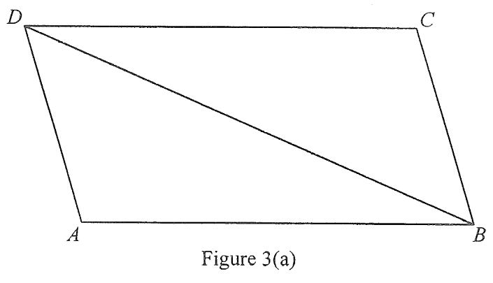

(a) In Figure 3(a), $ABCD$ is a paper card in the shape of a parallelogram. It is given that $AB = 60$ cm, $\angle ABD = 20^\circ$ and $\angle BAD = 120^\circ$.
Find the length of $AD$. [2 marks]
(b) The paper card in Figure 3(a) is folded along $BD$ such that the distance between $A$ and $C$ is $40$ cm. (see Figure 3(b))
(i) Find $\angle ABC$.
(ii) Find the angle between the plane $ABD$ and the plane $BCD$. [5 marks]

In $\triangle ABD$, the third angle is the supplement of the other two:
$$\angle ADB = 180^\circ - 120^\circ - 20^\circ = 40^\circ$$Also, since $ABCD$ is a parallelogram the opposite angles are equal, so $\angle BCD = \angle BAD = 120^\circ$ and $\angle ADC = \angle ABC$.
By the sine formula in $\triangle ABD$,
$$\frac{AD}{\sin \angle ABD}=\frac{AB}{\sin \angle ADB}$$ $$\frac{AD}{\sin 20^\circ}=\frac{60}{\sin 40^\circ}$$ $$AD=\frac{60\sin 20^\circ}{\sin 40^\circ}\approx 31.9253\ \text{cm}$$$\therefore\; AD \approx 31.9\ \text{cm}$ (correct to 3 sig. fig.)
After folding along $BD$, $A$ moves to a new position while $B$, $C$, $D$ and the diagonal $BD$ stay fixed. The card is folded so that $AC = 40$ cm.
In $\triangle ABC$ we know two sides and want the included angle:
| $AB$ | $BC = AD$ | $AC$ |
|---|---|---|
| $60$ cm | $40$ cm |
Since $ABCD$ is a parallelogram, $BC = AD \approx 31.9253$ cm.
By the cosine formula in $\triangle ABC$,
$$\cos \angle ABC=\frac{AB^2+BC^2-AC^2}{2(AB)(BC)}$$ $$\cos \angle ABC \approx \frac{60^2+(31.9253)^2-40^2}{2(60)(31.9253)}$$ $$\angle ABC \approx 37.992^\circ$$$\therefore\; \angle ABC \approx 38.0^\circ$ (correct to 3 sig. fig.)
Let $AP$ be produced to meet $CD$ at $Q$, where $P$ is the foot of the perpendicular from $A$ to $BD$.
Since $AP \perp BD$ and $PQ \perp BD$, the angle between the plane $ABD$ and the plane $BCD$ is the angle $\angle APQ$.
In $\triangle ABD$: $AP = AD \sin \angle ADP$
$$AP \approx 31.9253\sin(180^\circ-120^\circ-20^\circ)=31.9253\sin 40^\circ \approx 20.521\ \text{cm}$$Then $DP^2 = AD^2 - AP^2$, so $DP \approx 24.456\ \text{cm}$, and in the right-angled triangle $PDQ$ with $\angle PDQ = 20^\circ$:
$$PQ = DP\tan 20^\circ \approx 8.901\ \text{cm}$$First get $DQ$ from the right-angled triangle $PDQ$:
$$DQ^2 = DP^2 + PQ^2 \approx (24.456)^2 + (8.901)^2 \;\Rightarrow\; DQ \approx 26.026\ \text{cm}$$Note that $\angle ADC = \angle ABC \approx 37.992^\circ$. Apply the cosine formula in $\triangle ADQ$:
$$AQ^2 = AD^2 + DQ^2 - 2(AD)(DQ)\cos \angle ADC$$ $$AQ^2 \approx (31.9253)^2+(26.026)^2-2(31.9253)(26.026)\cos 37.992^\circ$$ $$AQ \approx 19.671\ \text{cm}$$Finally, in $\triangle APQ$ with $AP \approx 20.521$, $PQ \approx 8.901$, $AQ \approx 19.671$:
$$\cos \angle APQ=\frac{AP^2+PQ^2-AQ^2}{2(AP)(PQ)}$$ $$\cos \angle APQ \approx \frac{(20.521)^2+(8.901)^2-(19.671)^2}{2(20.521)(8.901)}$$ $$\angle APQ \approx 71.914^\circ$$$\therefore$ the required angle is $71.9^\circ$ (correct to 3 sig. fig.).
(a) $AD \approx \dfrac{60\sin 20^\circ}{\sin 40^\circ} \approx \boxed{31.9\ \text{cm}}$
(b)(i) $\angle ABC \approx \boxed{38.0^\circ}$
(b)(ii) Angle between plane $ABD$ and plane $BCD$ $= \angle APQ \approx \boxed{71.9^\circ}$